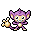
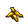
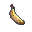
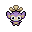

Pokédex / #190

Aipom #190
Normal
It lives atop tall trees. When leaping from branch to branch, it deftly uses its tail for balance.
Generation 2 · Johto

Stats
| Attack | 70 | |
|---|---|---|
| Defense | 55 | |
| Sp. Atk | 40 | |
| Sp. Def | 55 |
In the wild
| Wild level | 20–30 |
|---|---|
| HP | 55 |
| Experience | 7 |
| Egg groups | Field |
Evolution
- Does not evolve.
Moves
| Level | Move | Type | Category | Power | Energy | Cooldown | Effect | |
|---|---|---|---|---|---|---|---|---|
| 1 | Tackle | Normal | Physical | 15 | 15 | 1s | Tackle is one of the most common and basic moves a Pokemon learns. It deals damage with no additional effects. | |
| 5 | Scratch | Normal | Physical | 40 | 40 | 6s | Scratch inflicts damage and has no secondary effect. | |
| 10 | Sand-Attack | Ground | Status | – | 25 | 10s | Sand-Attack lowers the target's Accuracy by one stage. | |
| 15 | Fury Swipes | Normal | Physical | 18 | 45 | 9s | Fury Swipes inflicts damage, hitting 2-5 times per use. | |
| 20 | Swift | Normal | Special | 60 | 60 | 9s | Swift deals damage and ignores changes to the Accuracy and Evasion stats. | |
| 25 | Astonish | Ghost | Physical | 30 | 30 | 5s | The user attacks the target while shouting in a startling fashion. This may also make the target flinch. | |
| 30 | Low Sweep | Fighting | Physical | 65 | 65 | 10s | The user makes a swift attack on the target's legs, which lowers the target's Speed stat. | |
| 35 | Shadow Claw | Ghost | Physical | 70 | 70 | 16s | The user slashes with a sharp claw made from shadows. Critical hits land more easily. | |
| 40 | Rest | Psychic | Status | – | 100 | 180s | User sleeps for 5 seconds, but user is fully healed. | |
| 45 | Agility | Normal | Status | – | 80 | 20s | Agility raises the user's Speed by two stages. | |
| 50 | Brick Break | Fighting | Physical | 75 | 75 | 12s | Brick Break deals damage, but removes the effects of Reflect before attacking. | |
| 55 | Uproar | Normal | Special | 90 | 100 | 25s | The user attacks in an uproar for three turns. During that time, no Pokemon can fall asleep. | |
| 60 | Iron Tail | Steel | Physical | 100 | 100 | 15s | Iron Tail inflicts damage and has a 10% chance of lowering the target's Defense stat by one stage. | |
| 65 | Last Resort | Normal | Physical | 140 | 140 | 30s | Last Resort does damage and has no secondary effect. |
Field abilities
DigStrengthFindCutRock SmashHeadbutt
Special abilities
Run AwayPickup
Egg moves
AgilityBeat UpBounceCounterCovetDouble SlapFake OutPursuitQuick GuardRevengeScreechSlamSpiteSwitcheroo
Technical machines
Aerial AceBideBrick BreakDefense CurlDouble EdgeDouble TeamDream EaterDynamic PunchFire PunchFocus PunchFury CutterHeadbuttIce PunchIron TailMimicMud SlapNightmareRageRain DanceRestShadow BallShock WaveSolar BeamSubstituteSwiftTauntThunderThunder PunchThunder WaveThunderboltToxicWater PulseZap Cannon
Drops
| Item | Amount | Chance | |
|---|---|---|---|
| bamboo leaves | 1 | 16% | |
| bamboo leaves | 1 | 16% | |
| bunch of sugar cane | 1 | 16% | |
| bamboo stick | 1 | 16% | |
| banana sash | 1 | 16% | |
 | banana skin | 1 | 16% |
| fur | 1 | 6.67% | |
| acorn | 1 | 5.33% | |
 | banana | 1–5 | 5% |
| ape hair | 1 | 1% | |
| bag of candies | 1 | 1% | |
 | aipom doll | 1 | 0.1% |
| Love Plate | 1 | 0.002% | |
| TM 36 | 1 | 0.001% |